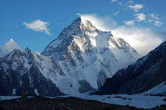

There are some pictures of Everest and K2 mountain
Mount Everest
Mount K2

About Tourism in mountains
Tourism in mountain regions
Mountain Tourism is a type of "tourism activity which takes place in a defined and limited geographical
space such as hills or mountains with distinctive characteristics and attributes that are inherent to a
specific landscape, topography, climate, biodiversity (flora and fauna) and local community.